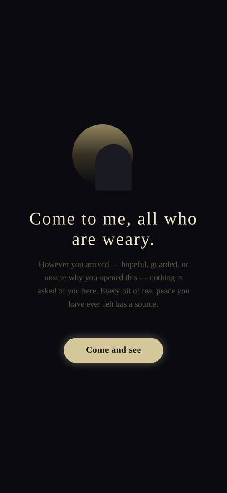
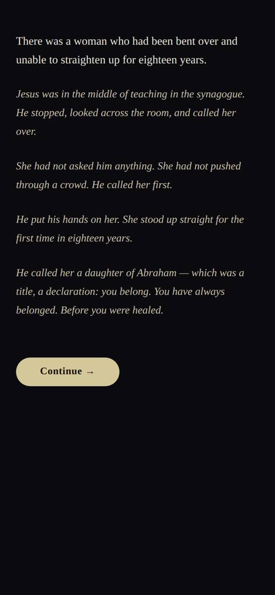

Faith that meets you where you are.
This is the one thing to hand someone when they ask, “So what is this app you built?”
It is written to be read by anyone — a friend, a family member, a priesthood leader, a bishop — with no technical knowledge required. You can read it cover to cover, or open straight to the chapter that answers the question in front of you.
The first half explains what Milk Before Meat is, what it feels like to use, and why it is built the way it is. The second half is the working plan: exactly where the app stands today, who is testing it, how it reaches more people, how it honors the Church every step of the way, and the honest answers to the hard questions a thoughtful person might raise.
Nothing in these pages tries to be slicker than the truth. Where the app has a limit, this book names it. That honesty is not a weakness in the pitch — it is the pitch.
Milk Before Meat is a gentle faith app, patterned after the way Jesus actually ministered to people — meeting them exactly where they are, paying close attention, and walking with them, never rushing them.
The name comes from a simple idea found in scripture: you give a person milk before you give them meat. You start with the foundational truths the heart can receive — that God is good, that they are seen, that there is a source for every bit of hope they have ever felt — long before anything deeper. The app never forces the meat. It waits, the way a patient teacher waits, until a person is ready and asks for more.
If you have only a moment to explain it: “It’s a quiet app that meets people wherever they are in faith — it opens with a story instead of a survey, listens, and always keeps a real person one tap away.”
Most people’s phones are full of things designed to take from them — their attention, their peace, their hours. Milk Before Meat is built to be the opposite: a small, calm place that gives something back. For the seeker who is curious but wary, for the person carrying something heavy, for the believer who wants something better than the endless scroll, it offers a moment of stillness and a true word.
The beauty of the design is that it quietly adjusts to whoever opens it. The same app serves the person who isn’t sure they believe anything, the person who was hurt by religion and is keeping their distance, the member of the Church who is drifting and tired, and the faithful Latter-day Saint who simply wants to be fed. No one is sorted into a visible box; the app just learns, gently, and offers each person what they actually need next.
The whole thing rests on one conviction: the people who ministered best met others with patience, attention, and love — one person, one story, one honest question at a time. Jesus did not open with a sales pitch. He told stories to crowds who hadn’t asked for them, He healed, He asked questions, and He let people come to know Him. Even when the rich young ruler walked away, Jesus let him go. This app is built to do the same: to invite, never to corner; to be honest about what it is the moment anyone asks; and to leave every person completely free.
Here is what a person actually sees and feels, in order, from the moment they open Milk Before Meat.


The very first thing a person meets is calm: a single quiet image and one true line — “Come to me, all who are weary.” No login. No account. No form asking their religion. Just a gentle invitation: Come and see. Nothing is asked of them before they are welcomed.
Instead of explaining itself, the app tells a short, beautifully written moment from the life of Jesus — the woman bent over for eighteen years whom He called daughter of Abraham; the prodigal son; the woman at the well. Each ends with one honest, open question that invites the person to place themselves inside the story. Their answer is the first thing the app comes to know about them — not a checkbox, but something real.
Every time it opens, the app reminds the person, in writing, that “this app is not God. It cannot answer a prayer… take what you feel here to God and to people who love you, and let the Spirit, not an app, tell you what is true.” It calls itself a lantern, not the Light.
There are many faith apps. Here is what makes this one its own — the things worth saying out loud when someone asks, “How is it different from anything else?”
No account, no email, no quiz about your beliefs. It earns the right to know you by first giving you something — a true and beautiful moment — exactly the way the Savior opened with parables rather than demands.
The app learns who a person is from how they talk, and quietly offers what fits — but it never shows them a label, a level, or a progress bar for their soul. There are no gates a person must “pass.” No one is ever made to feel they haven’t qualified for the next step. It is attention in the service of love, not a corporate survey dressed up in scripture.
When someone believes something painful about God, the app does not debate them. It lets the words and stories of Jesus — from the scriptures they already trust — do the gentle work of correcting the picture. You cannot argue a person into the love of God; you can only show it to them.
It gives foundational truth first and waits. It will not reach for the deeper things of the restored gospel until a person has shown they believe God is good and have asked to go further. Same Christ, different depth, never rushed.
Each time a person returns, a new story is waiting, and their Profile remembers the journey so far — the stories seen, the answers given, the person they are becoming. That growing, personal record is what gently pulls them back, not manipulative streaks or notifications.
The app never pretends to be the destination. At every step it keeps a real person within reach, because a soul is not a data point and an app is not a substitute for being known by another human being.
The honest, current picture as of late June 2026. This is a real, working app that can be installed on a phone today — not a sketch or a someday.
| What | Where it stands |
|---|---|
| The app itself | Built and working. A complete experience — the opening, the stories, the companion, the journal, the profile, and the real-person handoff are all live. Built |
| iPhone (Apple) | Submitted to Apple for public App Store review; it releases automatically the moment Apple approves. Anyone with an iPhone can install the real app right now through a free test link. Awaiting Apple |
| Android (Google) | The latest build is live on Google’s internal test track and installable today via a tester link. To go fully public, Google requires a structured 14-day test (see below). In testing |
| Website & privacy | Live at milkb4meat.org, with a published privacy policy and a support page. Done |
Because the developer account is new, Google requires a closed test of at least 12 people who stay opted in for 14 continuous days before the app can be released publicly on Android. The iPhone side has no such hurdle. This single requirement — twelve committed Android testers for two straight weeks — is the real gate between “testing” and “public,” and the launch plan in this book is built around meeting it gracefully.
(Full step-by-step install instructions are in Chapter 10. For Android, a person’s Google email must be added to the tester list first.)
A straight account of who has their hands on the app today, and who comes next.
The app is tested every day within Cameron’s own home — on his Android phone and on his wife’s iPhone — so both the Apple and Android versions are checked on real devices. Every conversation a tester has comes back to Cameron, who reviews it personally; in this first phase, a real person stands behind every interaction.
Beyond the household, friends have begun joining the testing phase — using the app on their own phones and sending back honest feedback. Their names are listed here so anyone reading can see this is already in real hands:
| Name | Phone |
|---|---|
Write each friend’s name and whether they’re on iPhone or Android as they come on — or send Cameron the names and they’ll be printed straight into this page.
From there it widens to a small circle in the ward — people who’ll actually use it and give honest feedback. Two brethren make natural early conversations: Rich Sutherland (Elders Quorum President) and Kyle Castle (Second Counselor in the Bishopric, and a close friend), who can also read the best moment to bring it to the Bishop.
The whole path, in order, from where things stand today to a public app — done patiently and the right way.
Get it into the hands of people who’ll actually use it and give honest feedback — friends first, then a small circle in the ward. Loop in the Bishop as a courtesy before inviting the wider congregation, since it’s their ward. Let real momentum build. Then start Google’s official 14-day clock when the testers are already on board, so that window is used to the full. iPhone people come along the whole time, effortlessly.
A complete, ready-to-use kit already exists alongside this book — a designed one-page brochure, a staged-approach script, invitation emails, an install guide, this FAQ, and a privacy one-pager — all ready to print and hand out.
Milk Before Meat is built to sit comfortably within the Church’s own guidance. Here is how it lines up — and where it’s careful to stay in its lane as an independent project.
Milk Before Meat is an independent project built by a member. It is not an official Church product, it claims no endorsement, and it says so plainly every time it opens: “not officially affiliated with, endorsed by, or sponsored by any church.” It uses none of the Church’s protected names in its title. The ask of any leader is never for endorsement — only for counsel and a quiet local blessing to test.
The Church’s AI guidance was written mostly for members using AI in their own callings; an app that ministers to seekers is newer ground. That’s simply why it’s kept clearly as an independent member’s project rather than dressed up as anything official — not because there’s anything to hide, but because that’s the accurate way to describe it.
The honest, out-loud answers to the pointed questions — so no question catches you flat. The rule under all of them: when a question is sharp, don’t get defensive, get honest.
Is this an official Church app?
No — and it tells everyone so, every time it opens. It’s an independent app built by a member. No one should ever mistake it for something the Church put out.
Then why bring it to a priesthood leader?
Because even though it isn’t a Church product, it touches sacred things and is meant to help bring people to Christ — so it should be done under priesthood counsel, not off on one’s own. The ask is not endorsement; it’s a blessing to let a few trusted brethren test it and give honest feedback.
Is it appropriate to use AI for something spiritual?
The Church addressed this directly in December 2025: use AI in positive, uplifting ways; it can never replace divine inspiration or real relationships, and should support — not supplant — a person’s connection with God. That is the exact standard the app is built to. It reminds every user, every time, that it is not God, can’t answer a prayer, and that they should pray to Heavenly Father directly.
Could the AI teach false doctrine?
That’s the honest risk with any AI, and it won’t be pretended impossible — which is exactly why priesthood holders are asked to test it and flag anything that feels off. By design it ministers only from the Bible and the goodness of God most people already accept. It will not raise the Restoration, Joseph Smith, or the Book of Mormon unless the person reaches for it and gives permission first. Nothing is presented as official Church doctrine.
Isn’t it dishonest to hide that it’s an LDS app until later?
It never hides it. The moment anyone asks who made it or whether it’s an LDS app, it answers immediately and truthfully — it’s instructed never to deny or dodge that. What it doesn’t do is open with a sales pitch, for the same reason the Savior didn’t begin by announcing “I am the Messiah, join my church.” He told stories, healed, asked questions, and let people come to know Him.
Are you trying to manipulate people into joining the Church?
No, and two things make that impossible by design. First, it never lies about what it is — full disclosure the instant anyone asks. Second, it leaves everyone completely free; its written rule is literally “Jesus let the rich young ruler walk away, so do you.” Success is a person “truly met, unpressured, and free” — whether or not they ever join anything.
What happens to what people tell it? Is their privacy protected?
It collects very little. People sign in anonymously — no name, no email, no account required. If someone messages a real person, that’s tied only to an anonymous ID, and they can only ever see their own conversation. The app even shows people what it has noticed and lets them delete it. The honest caveat: conversations are processed by an outside AI service and messages are stored in a standard secure cloud database — normal for an app, but true, so what’s collected is kept to a minimum.
What if someone in real crisis uses it?
It has a deliberate crisis protocol: lead with presence rather than a cold hand-off, never act as a therapist or diagnose, gently offer a real person, and in the U.S., when there’s sign of immediate danger, surface the 988 Suicide & Crisis Lifeline. The worst moments were thought through, not just the easy ones.
Does this replace the missionaries?
Not at all. It’s one member living “love, share, invite,” keeping a real person one tap away at every step. The long-term hope is to have real missionaries woven into it down the road.
Who responds when someone wants to talk to a real person?
Right now, Cameron — he reviews the conversations and responds. As it grows, the vision is a small team of trusted members, and eventually real missionaries. None of that is hidden; the app calls it “the admin team,” and a person always knows a human is available.
What if a leader isn’t comfortable with it?
Then their exact concern is welcome and taken seriously — that’s the whole reason to come to counsel first instead of just launching. A “not yet” or a “change this first” is a good outcome, not a rejection. Better slow and right than fast and wrong.
A plain-language page for anyone who asks, “What happens to what I say in there?” Written honestly — it names both what is protected and what is true about where data goes.
You can use Milk Before Meat without giving your name, your email, or making any account at all. When you open it, you’re signed in anonymously. It’s built to know as little about you as possible while still being able to help.
If you choose to share something — an answer to a story, a note about where you are with faith, a message to a real person — it’s tied only to that anonymous ID, never to your real identity by default. On your Profile, the app shows you what it has learned about you and gives you a button to remove any of it. You decide what it keeps. There’s a published privacy policy at milkb4meat.org.
So you have the full picture: when you have a conversation, the words are processed by an outside AI service (the same kind of technology behind other well-known assistants), and if you message a real person, that message is stored in a standard secure cloud database so the person can read and reply. This is normal for an app like this — but it’s true, and you deserve to know it rather than be told your words vanish into nowhere. That’s exactly why the app is built to collect little and let you delete what it has.
Getting someone onto the app is genuinely easy on iPhone and only slightly more involved on Android. The one question that saves every headache: “Is your phone an iPhone or an Android?”
Nothing is needed from them in advance. If you’re setting up the Bishop’s iPhone in person, you can just do these three steps for him on the spot.
Part 1 (what you do, once per person): get the person’s Google account email — the one tied to their phone’s Play Store, usually their Gmail — and add it to the “MBM Testers” list in the Google Play Console.
Part 2 (what they do):
If it says they don’t have access, it almost always means the email added doesn’t match the Google account their phone is actually signed into — check that one thing first.
Whatever this app becomes, it is meant to stay a lantern — never the Light.
The deepest safeguard in Milk Before Meat is not a feature; it is a posture. The app is instructed, in its very core, never to claim to be Jesus or any spiritual authority, never to bluff, to admit when it doesn’t know, and to point always toward Christ rather than to itself. It is anchored in the counsel of Elder Gerrit W. Gong, that AI “can answer questions, but it cannot answer prayers… it is not God and cannot be God.”
So the app reminds every person, every time it opens, to close the screen and pray to God directly — to let the Spirit, not an app, tell them what is true. It keeps a real human one tap away because it believes a soul is meant to be known by other souls. It lets people walk away free, because love does not coerce. And it defines its own success not by conversions, but by whether a person was truly met, unpressured, and free — whether or not they ever join anything.
— end —
Milk Before Meat • milkb4meat.org • June 2026